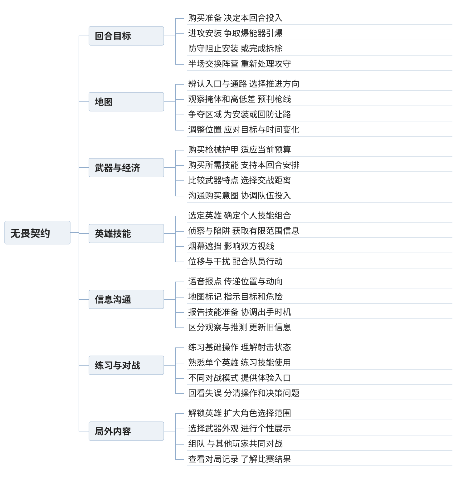

VALORANT玩法分析
无畏契约把不同的技能交给不同英雄，但进入对局以后，很多技能的作用要等队友开枪时才真正显现。一颗烟封住远处的视线，让进点的人少清一个方向；一支侦察箭逼对手处理箭头，让队友得到短暂的进攻机会。只看技能本身的伤害，很难解释这些选择。
本文围绕标准爆破玩法展开，重点看英雄技能、地图与回合目标如何影响交战。其他模式作为练习和体验入口提及，不混用它们的经济与胜负规则。
一 系统和功能

系统图保留与一场对局直接相关的功能。局内购买决定这一回合能使用什么，英雄和地图决定这些东西适合怎样使用，爆能器与时间则决定什么时候必须行动。
回合目标和地图
标准爆破由两支五人队伍对抗，双方分别担任进攻方和防守方，并在半场交换阵营。进攻方需要争取安装爆能器并保护它完成引爆，防守方要阻止安装，或在安装后完成拆除。[1]
地图提供多个进攻方向和可安装区域。路口、掩体与高低差把视线切成不同范围，玩家需要判断哪些位置有人看守，哪些区域还能绕行。地图知识的作用很具体：知道自己跨出这一步，会同时被几个方向看到。
消灭敌人能降低完成目标的阻力，但不能把所有局面都理解成击杀比赛。爆能器已经启动时，即使防守方消灭剩余对手，也还要来得及拆除。进攻方如果已经获得有利的守包位置，继续追着人打，反而可能主动放弃时间优势。
武器和购买
购买阶段让玩家用本局经济选择武器、护甲和需要购买的技能。武器有不同的价格、射程适应与射击特点，玩家不可能每一回合都得到同一套理想装备。[1][2]
这会改变路线选择。拿着适合近距离的武器，可以尝试靠近拐角或借助遮挡缩短距离；有适合架远点的武器，则可能把防守位置向长枪线调整。选择枪械和选择位置是相互配合的，便宜武器不等于只能用较差版本的同一套战术。
购买又是队伍问题。队友的钱不一样，但这一回合要共同执行一个安排。一部分人准备完整投入，另一部分人想留钱到下一回合，五个人的装备和行动就可能不一致。购买沟通让玩家提前讨论这一回合愿意承担多少风险，而不是等交火失败以后才发现想法不同。
英雄和技能
英雄分为决斗、先锋、控场和守卫等职责方向。角色选择给队伍带来不同手段，但每个人都仍然需要用枪、观察局势并处理爆能器目标。[1]
以猎枭为例，侦察箭需要让敌人处在箭头的视线范围内才能提供相应侦察，对方也可以击毁箭头。[3] 它给的信息有条件，不能把一次没有探到人直接解释成整片区域无人。
幽影的烟幕遮挡视线，可以把不同方向的威胁暂时分开。[4] 零的陷阱能用于监看通路，但装置可以被破坏，布置的线路也不等于整条路线永远安全。[5] 这类技能的意义是减少某些检查工作，把玩家的注意力挪到别处；具体减少多少，取决于布置、时机和对手的处理。
沟通 练习与局外内容
语音和标记把个人看到的内容交给队伍使用。报出敌人的位置还不够，最好区分确实看到、听到，以及根据先前情况推测。否则，一条已经过时的信息就可能让队友不再检查某个方向。[1]
练习入口和不同对战模式帮助玩家分开学习。先练停止移动后的射击，再练一套技能，最后把它们放回完整回合，通常比同时处理所有问题容易。非排位模式还能降低输掉段位分的顾虑，但并不会自动消除技能识别与地图学习的难度。
局外的英雄解锁扩大可选角色范围；外观内容提供收藏和展示动机。它们与局内购买不同：英雄选择在进入对局前影响工具组合，回合经济则在对局中反复限制当下投入。分析时把两种获取过程混成一套成长，就会忽略竞技对局里反复重新购买的意义。
二 接触系统的顺序
下面整理的是理解玩法的建议顺序，不是客户端的功能解锁顺序。对已经熟悉战术射击的人，前半部分可以很快过去；新手往往需要先解决基础动作。
先知道这一枪为什么没有打准
移动、准星位置、开火方式和声音，是第一层需要建立的对应关系。官方入门指南专门提醒玩家在射击前停止移动。[1] 如果这一点还没有形成习惯，玩家就可能把多数失误归结为反应慢，却不知道自己开火时的状态已经降低了命中机会。
初期可以保持英雄和武器相对固定，减少同时变化的东西。先能在一个常见距离上完成停步、瞄准和射击，再逐渐认识其他武器适合什么局面。过早学复杂技能点位，可能让人记住投掷动作，却在技能已经创造机会时打不出后续的一枪。
再理解一回合里 为什么有时应该等
有了基础操作后，需要接触爆能器、时间限制、进攻与回防。刚开始看见敌人就追击很自然，但标准爆破经常要求玩家暂时放下这个冲动。比如队友正在安装，自己的任务可能是挡住一条回防路线；包已经安装，贸然前压也可能把原本需要对手解决的问题重新交回自己。
这一步适合结合简单局面解释，而不是只背胜负规则。让玩家理解两种情形的差别：还没有安装时，进攻方需要找到进入区域的办法；安装以后，防守方需要在剩余时间内重新进入。地图没变，着急的人变了，位置的价值也随之改变。
选一个英雄 学会让技能接上行动
接着再深入一个英雄。第一阶段可以会用技能，下一阶段需要能说出为什么现在用。烟幕是为了让谁经过哪一段路，侦察是为了决定继续进点还是先停下，陷阱是在给哪个空出来的位置补信息。目的清楚以后，技能点位才有上下文。
队友配合也从这里开始。投完技能站在原地等待结果，和提前告诉队友准备进入，可能得到完全不同的效果。练习时既要看技能有没有落到位置，也要看队友有没有利用它。只用技能命中次数衡量学习效果，会漏掉这层关系。
最后把购买和前几回合的信息一起考虑
当玩家能够完成基本进点和回防，才更容易理解经济安排与对手习惯。前几回合对方如何防守，某条路线是否经常前压，队伍这一回合打算投入多少，都会影响行动。比赛由一系列回合组成，玩家不能只解释刚发生的那一次对枪。
此时复看对局，问题也可以问得更具体：进点时谁没有跟上；烟消失前是否已经过了关键路口；某个信息为什么被当成确定事实；购买阶段是否就出现分歧。这比把每次失败都总结成配合不好更有帮助。
三 核心玩法
技能改变的 是对枪之前需要处理的东西
设想进攻方要穿过入口进入安装区域。入口前方有近处掩体，远处还有防守方能架枪的位置。如果直接走出去，进攻者需要同时应付多个可能出现敌人的方向。即使知道对方大概在哪，也不容易把准星同时放在两个位置。
此时在远处枪线上放烟，不能让那名防守者消失，但能暂时阻断直接观察。进攻者可以先处理近处的角落。这个技能减少的是同一时刻需要应付的方向，而不是保证这次进点成功。防守者仍然可能穿烟射击、改变位置，或者等待烟结束后重新接战。
烟的位置也有差别。烟口如果在不合适的位置留下活动空间，对手可能借烟靠近，反而让进攻方多出需要检查的近点。因此，评价一颗烟不能只看它有没有遮住人，要看它把双方接下来的交战位置推到了哪里。
侦察箭的作用则不同。猎枭把箭打到能够观察区域的位置，对方可以选择隐藏、击毁或离开。[3] 箭被打掉以后，进攻方失去了持续侦察，但可以确定装置受到了处理，并结合开火声音继续判断。至于是不是多人防守、角落有没有第二个人，仍然不能凭这一条反馈直接得出。
烟幕与侦察可以前后配合，却不能随便交换目的。一个主要改变视线，一个主要争取信息。只把它们都归成辅助进点，就说不清为什么有时需要先侦察再决定封烟，有时又需要先遮住一个方向，给侦察和队员靠近创造条件。
配合是否成立 要看技能之后有没有人能接上
同样一支侦察箭，如果队友已经靠近入口，防守方处理箭头时，队友就有机会向前推进。如果队友还在远处，装置被清掉以后，防守方可能已经回到原来的位置。技能本身都正常释放，得到的结果却不同。
这说明进攻节奏不能只用出手快慢解释。更重要的是几个动作能不能衔接：信息出现时，有没有人能据此改变瞄准；烟幕形成时，队伍能不能及时通过；第一个人接敌时，后面的人能不能参与交火。任意两步之间隔得太远，前一个技能争取的条件就可能已经消失。
一种常见的分析误区，是默认防守者什么都不做，于是把进攻流程画成一条必胜连招。实际推演应该允许防守者后退、反制或拖延。进攻方看到守点的人退开，可以先占下空间再继续观察，不必因为预定了全套技能，就把剩余技能全部交掉。
因此，我认为英雄组合的深度主要体现在能接续多少种行动，而不仅是能叠加多少效果。同一套组合既能快速推进，也能试探后停下，才有调整余地。如果只有一套先后顺序，第一次没有成功就不知道做什么，组合看起来很复杂，实际选择却很少。
安装爆能器以后 地图上的好位置会变
安装之前，进攻方需要接近安装区域，防守方可以利用时间要求迫使对手行动。安装以后，防守方需要回来处理爆能器，进攻方则有了等待的理由。双方对同一条通路的需求发生交换。
例如，一名进攻者原本需要越过入口，安装后却可以退到能看住接近路线的位置。继续追击可能多拿一个击杀，但也可能离开能支援队友的范围。留在原地看似消极，实际上是在利用对手必须回来的条件。
技能的价值也会跟着变。进点时交烟，是为了让己方经过某条危险枪线；守包时留下的遮挡或区域限制技能，则可能用于阻碍对方接近。但把技能留到最后也有代价：如果前面因为少一个必要技能根本进不了点，所谓后续价值就不会出现。
这类取舍比笼统地说技能要省着用更准确。该不该交，要看当前问题是否值得立刻解决，以及解决之后能否形成下一步。如果当前不交就可能失去安装机会，继续保留未必理性；如果队伍已经拿到位置，再把技能全部倾倒出去，也可能没有必要。
回合经济让上一回合继续影响下一回合
购买阶段把整场比赛与眼前对枪连接起来。玩家既要考虑本回合的战斗力，也要考虑后续能否形成一次比较完整的队伍投入。输掉一个回合之后，马上花光所有钱尝试扳回，并不是唯一选项。
以经济不整齐的队伍为例，有人能买理想装备，有人只能拿基础武器。如果各买各的，拥有较好装备的人可能期待一次正面执行，队友却准备通过近距离接触寻找机会。问题不只是枪械差距，还有同一回合的打法没有对齐。
经济约束也让武器和技能的相互补充变得重要。在装备较弱时，用遮挡缩短交战距离、等待对手进入多人能同时处理的位置，可能比在远距离重复同一种对枪更有希望。这不是低成本装备必然能翻盘，而是经济劣势可以转成一个需要调整打法的问题。
不过，我不认为每一局都需要复杂的算钱过程。基础规则应当能让玩家看清自己和队友大致能买什么，再围绕是否一起投入作出沟通。如果队伍必须依靠大量额外记忆才能做出最普通的购买判断，学习成本就会挤占对战本身的注意力。
和 CS 相比 英雄让队伍分工更明确 也更难互相补位
CS 的烟、闪和燃烧类投掷物同样能处理视线、位置与进攻时机。所以，技能可以影响信息和空间，并不是无畏契约与 CS 的全部区别。更明显的差别在于：无畏契约把不同能力组合绑定到所选英雄身上，队伍在选人时就已经作出一部分分工。[1][6]
这种绑定有直观的好处。队友知道谁能提供某种遮挡或侦察，更容易提出具体请求；玩家也可以长期练习一个角色，通过熟悉工具形成自己的打法。英雄形象还让这套工具更容易被记住。
它也让损失一个队员的后果变得更具体。失去某位英雄，有时不仅少一把枪，还少了一种其他队员无法完整补上的手段。剩余队员需要改变过路、进点或看守侧后的办法。角色职责因此必须和地图、枪械一起理解，不能按一种固定站位从头打到尾。
称它融入 MOBA 元素，可以描述英雄、技能组合和职责分化，但不足以解释实际对局。这里并没有因此变成靠局内刷级和出装不断抬高英雄强度的比赛。枪械对抗和爆能器目标仍然约束着技能使用；官方对战术循环的说明，也把技能与射击执行放在同一个决策过程中。[7]
我认为值得保留的是这种相互依赖：枪法好的玩家可以把技能创造的条件兑现，擅长观察和配合的玩家也能让队友少冒一些险。需要警惕的则是技能效果让人来不及识别、更谈不上处理。Riot 在早期雷兹案例中提过，玩家未能理解和响应技能提示，会造成强烈挫败感。[7] 对英雄设计而言，让对手知道发生了什么、还可以怎么做，和让使用者觉得技能好用同样重要。
参考资料
[1] Riot Games，Beginner's Guide，2024-08-02。基础回合、购买、英雄分工及沟通规则。未采用其中随版本变化的英雄和地图数量。https://playvalorant.com/en-us/news/announcements/beginners-guide/
[2] Riot Games，Arsenal。枪械类型与使用差异。https://playvalorant.com/en-us/arsenal/
[3] Riot Games，Sova。侦察箭视线要求及可被击毁的机制。https://playvalorant.com/en-us/agents/sova/
[4] Riot Games，Omen。烟幕遮挡视线的机制。https://playvalorant.com/en-us/agents/omen/
[5] Riot Games，Cypher。仅采用陷阱可布置、可破坏等机制，未采用旧版牢笼减速描述。https://playvalorant.com/en-us/agents/cypher/
[6] Valve，Counter-Strike 2 官方介绍中的 Responsive Smokes。CS 也通过投掷物改变视线和交战条件。https://www.counter-strike.net/cs2
[7] Riot Games，How we balance VALORANT，2020-06-26。战术循环及早期雷兹反制提示案例，不作为当前平衡状态的结论。https://playvalorant.com/en-us/news/dev/how-we-balance-valorant/